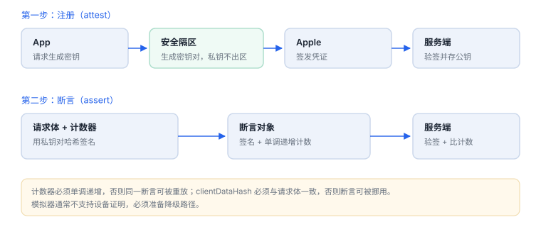

设备证明：安全隔区与 App Attest
证明的不是“用户可信”，而是“这次调用来自真实设备上的正版应用”
设备证明解决的问题很具体：服务端如何区分“真机上的正版 App”和“脚本、模拟器、改包后的客户端”。它依赖硬件密钥，因此不需要先判断设备是否越狱。
场景 服务端收到一个请求，附带几百字节的断言。它要在一秒内判断：这是不是那台设备、那一次安装、在那个计数器上签出来的。
1. 三层密钥
| 层 | 密钥在哪 | 能证明什么 |
|---|---|---|
| 硬件根 | 芯片内固化密钥（UID 类） | 设备身份不可导出、不可克隆 |
| 安全隔区 | 隔离区内生成，私钥不出区 | 密钥操作可绑定设备与用户密码 |
| 应用密钥 | SEP 内生成，App 只拿到标识 | 某次安装的密钥对，可签发断言 |
关键点：私钥从未离开硬件，服务端拿到的是“Apple 为该公钥签发的凭证”，而不是设备自报的身份。
2. App Attest 的两步
- 注册（attest）：App 生成密钥对并请求凭证。凭证里含公钥、环境（开发/生产）、应用标识，由 Apple 签名。
- 断言（assert）：之后每次敏感请求，用该密钥对“请求内容的哈希 + 计数器”签名，服务端验签并检查计数器单调递增。
Swift：生成密钥并请求凭证
import DeviceCheck
import CryptoKit
let service = DCAppAttestService.shared
guard service.isSupported else { return } // 模拟器通常为 false
let keyId = try await service.generateKey()
let clientHash = Data(SHA256.hash(data: requestBody))
let attestation = try await service.attestKey(keyId, clientDataHash: clientHash)
// 把 keyId 与 attestation 发给服务端校验并存档之后的断言用 generateAssertion(_:clientDataHash:) 生成，服务端保存该 keyId 对应的公钥与计数器。

3. 服务端必须校验什么
| 项 | 不校验会怎样 |
|---|---|
| 证书链到 Apple 根 | 自签凭证可伪造 |
| 应用标识与团队 | 别人的正版应用可冒用你的后端 |
| 环境（开发/生产） | 开发凭证可打到生产接口 |
| 公钥与 keyId 绑定 | 凭证与断言可拼接 |
| 计数器单调递增 | 断言可重放 |
| clientDataHash 与请求体一致 | 断言可挪用到别的请求 |
4. 能防什么、不能防什么
| 能防 | 不能防 |
|---|---|
| 脚本批量注册、模拟器调用 | 真实设备上被控制的合法 App 调用 |
| 断言重放（计数器） | 业务越权（仍需对象级授权） |
| 改包后盗用后端（签名与标识绑定） | 越狱本身（两套机制独立） |
| 伪造设备身份 | 用户主动放弃使用（无强制力） |
因此设备证明是“提高伪造成本”，不是身份认证的替代品：用户是谁仍要靠账号与令牌。
5. 数据细节：一次断言里有什么
| 字段 | 量级 | 作用 |
|---|---|---|
| 密钥对 | P-256（ECDSA） | 私钥在安全隔区，公钥随凭证下发 |
| 公钥 | 64 字节（x‖y） | 服务端验签用 |
| 请求摘要 | SHA-256，32 字节 | 把断言绑定到具体请求体 |
| 计数器 | 32 位无符号 | 单调递增，防重放 |
| 编码 | CBOR | 凭证与断言都是结构化对象 |
由此得出两个实现要求：请求体的序列化必须字节稳定，否则同一业务请求算出不同摘要；计数器必须持久化，重装或换设备时要有重新注册的路径。
6. 一次真实排查记录：真机通过、模拟器必失败
- 现象：真机一切正常，模拟器上登录流程直接中断。
- 先分类：不是网络问题——请求根本没发出，说明卡在凭证准备阶段。
- 查能力：打印
isSupported，模拟器返回 false，代码却按成功路径继续。 - 补降级：把设备证明做成可选增强：不支持时跳过，功能仍可用但风控等级降低。
- 结论与限制：记录“模拟器不支持设备证明”，并注明真机与模拟器的行为差异必须分别验证。
7. 失败分流
| 现象 | 原因 | 查哪里 |
|---|---|---|
isSupported 为 false | 模拟器或系统版本不支持 | 真机验证，提供降级路径 |
| attest 请求失败 | 网络、频率限制、环境不匹配 | 重试与退避，核对环境 |
| 断言被服务端拒绝 | 计数器回退或 hash 不一致 | 请求体序列化是否稳定 |
| 重装后断言失败 | keyId 随安装失效 | 重新注册并替换旧记录 |
| 开发环境正常、线上失败 | 凭证环境错配 | 构建配置与后台设置 |
8. DeviceCheck：轻量替代
如果只需要“同一设备不重复领取”，可用 DeviceCheck 的两个按开发者隔离的比特位，写入后跨安装保留。它不含密钥与签名，因此只能做低频防滥用，不能替代 attestation。
私钥不出区
应用只能拿到 keyId 与断言结果，私钥始终在安全隔区内；服务端保存的是公钥与计数器，而不是任何“设备密钥”。
应用只能拿到 keyId 与断言结果，私钥始终在安全隔区内；服务端保存的是公钥与计数器，而不是任何“设备密钥”。
9. 自测
- 为什么 App Attest 的私钥不需要（也不能）上传到服务端？
- 断言里的计数器解决什么问题？服务端要保存什么才能校验？
- 设备证明为什么不能替代账号体系？
- 模拟器上
isSupported为 false 时，产品应如何降级？